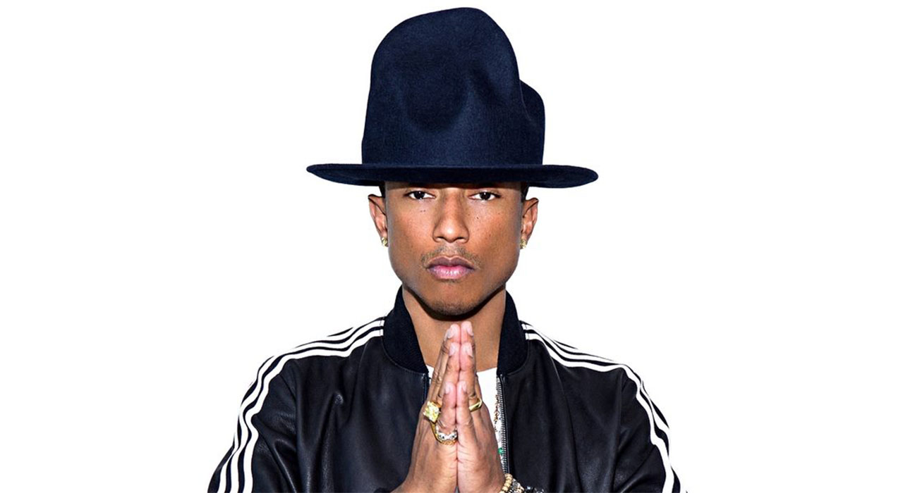

About Pharrell
Pharrell Williams is a Grammy-winning producer, singer, and songwriter who rose to fame in the early 2000s. He has produced and collaborated on many hit songs, including "Happy," "Blurred Lines," and "Get Lucky." He is also known for his stylish hats and unique fashion sense.
Popular Songs
Happy
From the soundtrack of the animated film "Despicable Me 2," "Happy" became a worldwide hit for Pharrell in 2013. It topped charts in numerous countries and earned Pharrell a Grammy nomination for Best Pop Solo Performance.
Blurred Lines
Released in 2013, "Blurred Lines" was a massive hit for Pharrell, Robin Thicke, and T.I. The song was the best-selling single of the year and spent twelve weeks atop the Billboard Hot 100 chart.
Get Lucky
Featuring Nile Rodgers on guitar, "Get Lucky" was a hit single from Daft Punk's fourth studio album "Random Access Memories." Pharrell's vocals and the song's funky groove helped make it a massive hit in 2013, reaching the top 10 in numerous countries.